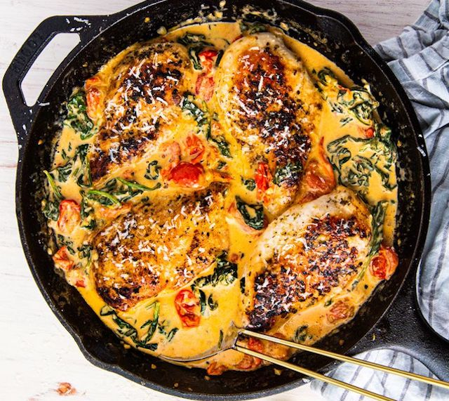

Creamy Tuscan Chicken
INGREDIENTS
- - 1 tbsp. extra-virgin olive oil
- - 4 boneless skinless chicken breasts
- - Kosher salt
- - Freshly ground black pepper
- - 1 tsp. dried oregano
- - 3 tbsp. butter
- - 3 cloves garlic, minced
- - 1 1/2 c. cherry tomatoes, halved
- - 3 c. baby spinach
- - 1/2 c. heavy cream
- - 1/4 c. freshly grated Parmesan
- - Lemon wedges, for serving
DIRECTIONS
- 1st: In a skillet over medium heat, heat oil. Add chicken and season with salt, pepper, and oregano. Cook until golden and no longer pink, 8 minutes per side. Remove from skillet and set aside.
- 2nd:In the same skillet over medium heat, melt butter. Stir in garlic and cook until fragrant, about 1 minute. Add cherry tomatoes and season with salt and pepper. Cook until tomatoes are beginning to burst then add spinach and cook until spinach is beginning to wilt.
- 3rd:Stir in heavy cream and parmesan and bring mixture to a simmer. Reduce heat to low and simmer until sauce is slightly reduced, about 3 minutes. Return chicken to skillet and cook until heated through, 5 to 7 minutes.
- 4th:Serve with lemon wedges.